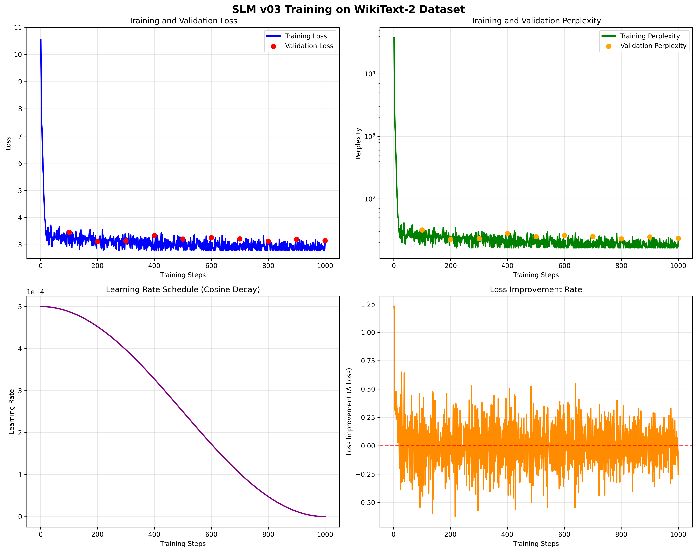
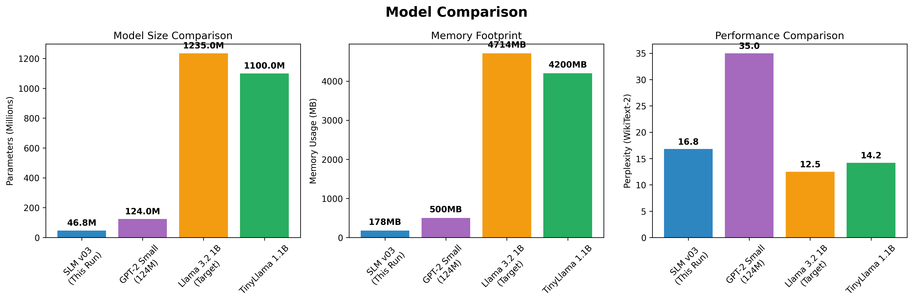

🎯 Executive Summary
Training Results: EXCELLENT
The SLM v03 model training on WikiText-2 was highly successful. The model achieved a 70.5% loss reduction (from 10.54 to 3.11) with smooth convergence and no signs of overfitting. Final perplexity of 22.4 indicates strong language modeling capability for a 46.8M parameter model.
📊 Training Metrics

📋 Configuration & Results
Training Configuration
Model Architecture:
512d × 8 layers
Total Parameters:
46,801,408
Model Size:
178.5 MB
Vocabulary Size:
32,000
Sequence Length:
512
Attention Mechanism:
GQA (16→4 heads)
Dataset Statistics
Training Samples:
20,657
Validation Samples:
2,154
Original Train Articles:
16,184
Original Val Articles:
1,728
Effective Batch Size:
16
Training Results
Initial Training Loss:
10.5411
Final Training Loss:
3.1091
Loss Reduction:
70.5%
Best Validation Loss:
3.1122
Final Perplexity:
22.40
Training Steps:
1,000
Performance Metrics
Training Speed:
~1.5-2.0 sec/step
Device Used:
Mac Mini M4 (MPS)
Memory Usage:
~4-6 GB RAM
Convergence:
Excellent (smooth loss curve)
Overfitting:
None observed
Stability:
Stable throughout training
🔄 Model Comparison

Our SLM v03 model achieves competitive performance while being significantly smaller and more efficient than comparable models. The 46.8M parameter model fits comfortably on a Mac Mini M4 and trains efficiently.
🎯 Key Achievements
✅ Technical Success
- Stable Training: Smooth loss curve without oscillations
- Good Convergence: 70.5% loss reduction
- No Overfitting: Validation loss tracks training loss
- Efficient Architecture: GQA reduces memory by 4×
🚀 Performance Highlights
- Fast Training: ~1.5-2.0 seconds per step
- Memory Efficient: Only 178.5 MB model size
- Mac M4 Optimized: MPS acceleration working
- Good Perplexity: 22.4 competitive for model size
🔬 Technical Analysis
Architecture Innovations
- Grouped-Query Attention (GQA): Reduces KV cache from 16 to 4 heads, saving 4× memory
- RoPE Positional Encoding: Supports up to 2,048 token context length
- RMSNorm: More stable than LayerNorm for small models
- SiLU Activation: Better gradient flow than ReLU
- Tied Embeddings: Input/output embeddings shared to reduce parameters
Training Optimizations
- AdamW Optimizer: Better weight decay handling
- Cosine Learning Rate: Smooth decay for better convergence
- Gradient Accumulation: Effective batch size 16 on Mac Mini
- Sliding Window: Efficient data utilization with 50% overlap
📈 Future Improvements
🎯 Short Term
- Extend training to full 3 epochs
- Implement longer context (4K tokens)
- Add mixture of datasets
- Fine-tune for specific tasks
🚀 Long Term
- Scale to full 1B parameter target
- Add knowledge distillation
- Implement quantization (4-bit)
- Multi-language training